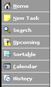

Toolbar

The Toolbar is in the upper left corner of every screen. Each of the buttons in the toolbar are available to you at all times. Here is a description of what each button does.Home Button
The Home Button on the Toolbar will bring you to the Home Screen.
Keyboard shortcut: "ctrl+h" on Mac, "alt+h" on Windows.
New Task Button
The New Task Button on the Toolbar will bring you to the New Task Screen.
Keyboard shortcut: "ctrl+n" on Mac, "alt+n" on Windows.
Home Button

The Search Button on the Toolbar will bring you to the Home Screen.
Keyboard shortcut: "ctrl+h" on Mac, "alt+h" on Windows.
Calendar Button
If enabled, the Calendar button on the toolbar will open the included PHP iCalendar in a new browser window, populated with your tasks data for the range you specified in config.php.
Keyboard shortcut: "ctrl+c" on Mac, "alt+c" on Windows.
Previous Page | Table of Contents | Next Page
Last Modified: February 28, 2005 @ 12:17 pm
(check for an updated version of this page)